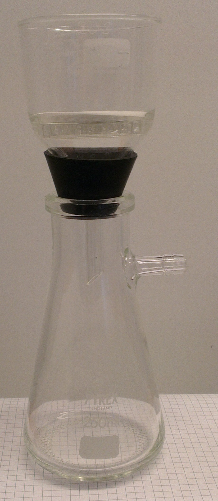
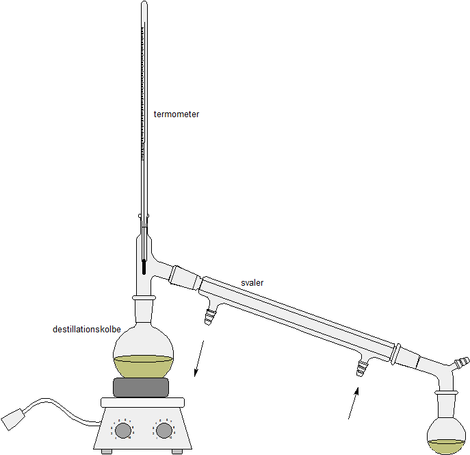

Formålet med dette kapitel er
Kemi er faget der beskæftiger sig med stofs opbygning og stofs omdannelse. Udover at være et fag i sig selv, kan kemi ses som et vigtigt hjælpefag til bl.a. biologi og medicin.
På C-niveau omhandler faget kemi tre områder:
Der findes mange millioner kemiske stoffer i denne verden. Nogle eksempler: jern, grafit, vand, cola, træ, sand, beton, stål, plastic, citronsyre ... Faktisk er alt der omgiver os kemisk stof. Det gælder også os selv, menneskekroppen er opbygget at kemiske stoffer. Som det ses, er der tale om meget forskellige stoffer. For at sætte lidt system i dette vivar, er det nødvendigt at dele dem op i nogle kategorier. Den første måde at dele stoffer op på, er at skelne mellem rene stoffer og blandinger.
Et rent stof kan vi definere som et stof hvor de dele stoffet er opbygget af, er ens - helt ned på mikroskopisk plan. Et godt eksempel på et rent stof er vand. Vand er opbygget af nogle mindste dele der kaldes molekyler (mere herom i næste kapitel). Molekyler består ganske vist af noget endnu mindre, men prøver vi at splitte vandmolekylerne ad, er vores stof ikke længere vand. Alle vandmolekyler er ens - derfor er vand et rent stof.
Et andet eksempel på et rent stof er sprit - der i kemien kaldes for ethanol. De mindste dele i ethanol, er ethanolmolekyler. Alle ethanolmolekyler er ens - derfor er ethanol et rent stof.
Hvis man blander to rene stoffer, får man en blanding. Et eksempel kunne være en blanding af vand og sprit. De mindste dele er vandmolekyler og ethanol-molekyler. Da der er to slags molekyler, er det ikke et rent stof.
Der findes flere metoder til at adskille de rene stoffer i en blanding. I de følgende afsnit beskrives tre metoder.
Ved en filtrering bruger man et filter til at adskille de rene stoffer i en blanding af en væske og fast stof. Lad os sige vi har en blanding af sand og vand. Hvis vi hælder blandingen gennem et filter, løber vandet gennem filteret mens sandet bliver holdt tilbage. Vi får altså adskilt blandingen af vand og sand i de rene stoffer vand og sand (idet vi her antager sand er et rent stof).

En filtrering kan derimod ikke bruges til at adskille salt fra vand. De dele salt består af, er så små, at de også ryger gennem et filter. Man må derfor benytte en anden metode.
Vil man adskille saltet fra en blanding af salt og vand, kan man inddampe blandingen. Når blandingen opvarmes, fordamper vandet, mens saltet bliver tilbage.
Destillation benyttes til at adskille en blanding af to væsker fra hinanden. Her udnytter man, at to væsker kan have forskellige kogepunkter. Hvis man fx har en blanding af ethanol (sprit) og vand, kan man udnytte at ethanols kogepunkt er på 78 °C mens vands kogepunkt er på 100 °C.
Man benytter den opstilling der er vist på figur 1.2. Blandingen af vand og ethanol befinder sig i destillationskolben til venstre. Ved opvarmning begynder blandingen at fordampe. Da ethanol har det laveste kogepunkt, vil vil der være et større indhold af ethanol i dampen, end der er i den oprindelige væske. Det kunne fx være der var 30 % ethanol i væsken (og dermed 70 % vand), mens der i dampen er 45 % ethanol (og dermed 55 % vand). Dampen kommer over i svaleren, hvor et ydre rør med kølevand sørger for afkøling. Herved fortætter dampen igen til væske. Væsken opsamles i kolben til højre (forlaget). Denne væske har nu et højere indhold af ethanol end den oprindelige væske. Ved at gennemføre destillationen flere gange, kan man opnå en højere og højere ethanolprocent.

Nye kemiske stoffer kan dannes ud fra andre kemiske stoffer. Eksempelvis kan kul brænde. Det er det der foregår på et kraftvarmeværk (fx Amagerværket). Ved forbrændingen bruges der oxygen (ilt) der findes i den atmosfæriske luft. Kul og oxygen "forsvinder'' altså, mens til gengæld dannes der to nye stoffer, nemlig vand og carbondioxid. Vi siger at der sker en kemisk reaktion. Kul reagerer med oxygen og danner vand og carbondioxid. Reaktioen kunne vi kortfattet skrive sådan: kul + oxygen → vand + carbondioxid. Normalt skriver man dog en reaktion på en endnu kortere form, mere herom i næste kapitel.
Andre eksempler på kemiske reaktioner:
Når man har en blanding af to (eller flere) stoffer, kan det være nyttigt at angive hvor stor en del af blandingen hvert stof udgør. Dette angives mest fornuftigt procentvis.
Lad os først definere begrebet masse. Masse er hvad en portion stof vejer. Det er altså det vi i daglig tale kalder vægt - men det korrekt ord i kemi (og fysik) er masse. Det måles i gram (eller kilogram eller ton).
Masseprocenten af et stof i en blanding, angiver hvor mange procent af blandingens masse stoffets masse udgør. Lad os fx sige vi blander 10 g salt med 90 g sand. Blandingens totale masse er dermed 100 g. Af disse 100 g udgør saltet 10 g. Derfor er masseprocenten for salt 10 %. Masseprocenten for sand er 90 %. Masseprocenterne for alle stoffer i blandingen skal naturligvis altid give 100 % tilsammen.
Nu er det selvfølgelig ikke altid sikkert at vi har netop 100 g blanding. Det kunne være vi blandede 56 g salt med 130 g sand.
Vi kan helt generelt beregne masseprocenten som
I ovenstående eksempel, kan vi beregne salts masseprocent som
1 mL vand vil veje ca. 1 g (den præcise masse afhænger af temperaturen). Tager vi i stedet 1 mL guld vil det veje ca. 19 g. Densiteten af et stof fortæller hvor meget 1 mL af stoffet vejer og måles i g/mL. Vand har altså densiteten 1 g/mL og guld har densiteten 19 g/mL.
Vi betegner densitet med det græske bogstav ρ (rho) og definerer det således:
hvor m er massen af stoffet og V er volumen.
Formlen kan omskrives:
.
Eksempel 1: 20 mL af et stof vejer 34 g. Vi beregner densiteten:
Eksempel 2: Et stof har densiteten 4,3 g/mL. Hvad vejer 50 mL af stoffet?
m = ρ·V = 4,3 g/mL·50 mL = 215 g.
Eksempel 3: Et stof har densiteten 3,5 g/mL. Hvad fylder 100 g af stoffet?